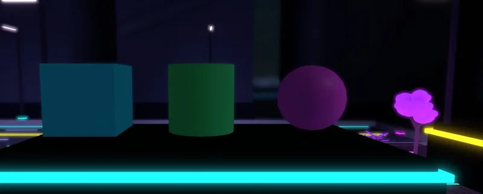
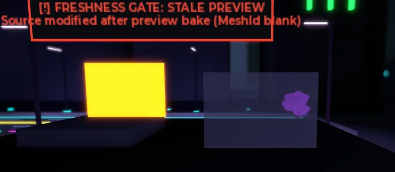

About this guide’s evidence
Reviewed against the linked Roblox documentation and published MeshMogul product limits. Recommendations and example scenes are guidance, not measured results. This review date does not represent a new native Studio test. Current UI details that still need confirmation are called out in the text.
Quick Takeaways
- Why it matters: Roblox's
EditableMeshAPI caps each individual output mesh at 60,000 vertices and 20,000 triangles, and several Studio part features behave subtly when tessellated . - How it affects your creations: Rounded primitives (
Ball,Cylinder), complexUnionOperations, rigged meshes, unreadable cloud meshes, mappedMaterialVariants, andDecal/Textureoverlays can blow past limits or fail preflight unless you know where each boundary sits . - What you can actually do about it: Budget curved geometry intentionally, check MeshMogul's preflight notes before baking, inspect the retained local Preview (
Object-backedEditableMesh) cleanly, and respect the freshness gate before publishing.
Visual field note / 07
Inspect the budget. Refresh after edits.
First · inspect the geometry

A block, cylinder, and sphere can have very different budgets.
Then · check Preview freshness

After changing the source, regenerate and review the Preview.
Publishing a broken or oversized mesh into your Roblox inventory is annoying. Worse is watching a tool chug for ten seconds, throw a vague engine error mid-bake, or silently upload stale geometry after you nudged a pillar two studs to the left.
Preflight validation and retained local Previews exist to catch every one of those failures while your work is still free, local, and reversible inside Studio.
1. The Hard EditableMesh Ceiling—and What Primitives Actually Cost
Roblox limits each EditableMesh instance to 60,000 vertices and 20,000 triangles (EditableMesh:AddVertex / EditableMesh API limits) . That means every single output appearance group in a MeshMogul bake must stay at or below both ceilings—not just the model as a whole, each individual resulting mesh group.
What surprises builders is how quickly seemingly "simple" Studio parts eat triangles once tessellated:
Studio Primitive (PartType) |
Vertices Per Part | Triangles Per Part | Why It Catches People Off Guard |
|---|---|---|---|
Block |
8 | 12 | Dirt cheap—until you stack 2,000 of them |
Wedge |
6 | 8 | Even cheaper than a block |
CornerWedge |
5 | 6 | Lightest polygonal wedge |
Cylinder (16 radial segments) |
66 | 64 | One hundred "simple" fence posts = 6,400 tris |
Ball (16 segments × 8 rings) |
114 | 224 | Ninety decorative spheres = 20,160 tris—already over the single-mesh limit! |
(Primitive tessellation counts above reflect MeshMogul's documented Studio primitive mesh generation counts .)
Two Primitive Sizing Traps That Break Expectations
Part.Cylinderdiameter =min(Y, Z)along the X-axis: A RobloxPartwithShape = Enum.PartType.Cylinderalways keeps a circular cross-section whose diameter is the smaller of itsSize.YandSize.Zaxes, oriented along X (unlike legacyCylinderMesh, which aligns along Y) . If you stretchSize.Y = 10, Size.Z = 2, the cylinder stays 2 studs wide—it does not become an oval column.Part.Balldiameter =min(X, Y, Z): ABallpart always stays a true sphere sized to the smallest axis (math.min(X, Y, Z)) . Only aSpecialMeshwithMeshType = Spherestretches into an ellipsoid.
Budget check: If your prop has dozens of tiny spheres, rivets, or decorative cylinders and crosses 20,000 triangles, split the build into modular sub-assemblies or simplify unseen curves before baking.
2. Preflight Refusals: What Fails Before a Preview Is Built (and Why)
MeshMogul checks your selection before creating an EditableMesh Preview so you get an actionable diagnosis instead of half-baked nonsense. Here are the main cases that stop preflight:
| Input Condition | What Happens in Preflight | Why the Boundary Exists |
|---|---|---|
| Empty or all-invisible assembly (with default invisible-part exclusion active) | Refused (Nothing visible) |
Prevents uploading empty invisible boxes by mistake (Collision Fidelity and Invisible Doorways) |
Skinned / rigged MeshParts |
Refused | EditableMesh bind-pose/skinning workflows are outside static geometry baking (Supported inputs & limits) |
Unreadable / unowned source MeshParts |
Refused | MeshMogul cannot read vertex/triangle data when asset permissions deny mesh read access |
MaterialVariant with texture maps (ColorMap, NormalMap, RoughnessMap, MetalnessMap) |
Refused | Custom UV-mapped material assets cannot be reliably repacked as flat Studio part textures (Supported inputs & limits) |
Mapless MaterialVariant (scalar overrides only) |
Allowed—with warning requirement | Supported as long as the destination place keeps that same MaterialVariant defined inside MaterialService |
Decal or Texture overlays |
Refused | Planar child decals project onto part faces rather than forming baked vertex/UV geometry |
Nested ProceduralModels |
Refused | Roblox's engine supports nested ProceduralModels, whereas MeshMogul 1.3.0 converts flat single ProceduralModels cleanly after ForceGeneration completes (From Assistant ProceduralModel to Mesh) |
Note on Runtime EditableMesh Memory Budgets
Developers sometimes hear about strict EditableMesh / EditableImage memory limits and worry their Studio plugin bake is broken. Distinguish the two environments carefully: live gameplay clients enforce strict device-dependent memory budgets for dynamic EditableMesh/EditableImage instances, whereas Studio Edit mode, servers, and Studio plugins operate without that client gameplay cap while authoring (EditableMesh API Reference) . Once you publish a mesh, the resulting cloud MeshPart loads normally as standard mesh geometry rather than a dynamic EditableMesh runtime buffer.
3. Bounded CSG UnionOperation and Glass Rules
Since version 1.3.0, MeshMogul supports solid UnionOperations and mixed Models combining Part, WedgePart, CornerWedgePart, and UnionOperation—strictly within a bounded plain-appearance profile (Supported inputs & limits).
Think of that support as a precision contract rather than a blank check for every messy CSG history in Studio:
- Allowed in bounded Union assemblies: Solid
UnionOperations and transparentGlassUnions (0 <= Transparency < 1),SmoothingAngle = 0,Reflectance = 0,Archivable = true, supported built-in Studio materials, noMaterialVariant, and no surface overlays (Decal,Texture,SurfaceAppearance). - Expected harmless omissions: Visual-only non-geometry children such as
PointLight,SpotLight,SurfaceLight,ParticleEmitter,Attachment,Beam,Trail,Fire,Smoke, andSparklesare automatically left out of mesh triangle baking so they do not block conversion of an otherwise clean prop . - Fallback recommendation when a CSG assembly is outside profile: If a Union uses custom
SmoothingAngle,MaterialVariant, or intricate negative-cut histories outside bounds, separate or rebuild the troublesome sub-piece with plain parts or use Blender + 3D Importer.
4. Retained Local Previews, Frame Slicing, and the Freshness Gate
Modern Studio sessions do not want a plugin freezing the viewport for ten seconds while walking a 1,500-part build. MeshMogul uses two safeguards to keep authoring smooth and trustworthy:
- Frame-sliced selection inspection & staged Preview progress (with cancellation): Inspecting large selections and generating Previews yields cleanly across frames so Studio stays responsive and you can cancel if you clicked the wrong folder .
- Retained in-session Preview (
Object-backedEditableMesh): Your Preview spawns directly in Studio without touching cloud quotas, and stays inspectable while you orbit, test lighting, and check pivots. Remember: because an in-session Preview uses temporaryObject-backedEditableMeshcontent, itsMeshPart.MeshIdbox stays empty until published (MeshId vs AssetId in Roblox) . - Freshness Verification Gate before publication: Ever baked a Preview, noticed a floating bracket on the original
Model, nudged the original bracket into place, and forgot to re-bake? If you try to publish an older Preview after modifying the source assembly, MeshMogul's Freshness Verification Gate flags that the preview is stale relative to the current source build so you never upload yesterday's geometry by accident .
Sources and technical references
- EditableMesh API reference
- Part API reference
- Solid modeling
- MaterialVariant API reference
- Supported inputs
- Supported inputs
Keep building
Before this guide: Publish a Mesh From Roblox Studio